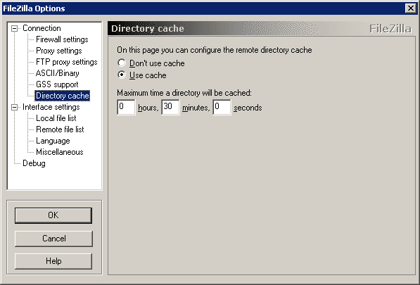

Directory Cache
Overview
The directory cache of FileZilla is a very powerful feature. It stores all directories you've visited on the server, so that FileZilla does not have to get the directory listing from the server the next time you want to display the same directory. This is especially useful when browsing a server with a complex directory structure.
When the directory cache is enabled, it is also possible to browse already visited directories during file transfers, so that you can queue up files for download while already transferring files.

The three input fields on the dialog page control how long a directory remains within the cache. When the time is
exceeded, the directory will be purged from the cache.
If you set this value too high, you may not notice any changes on the server, like new or modified files.
Furthermore, if you set it too low, the cache would be pretty much useless as
its contents would be purged too early and you won't be able to browse the server while transferring files
if you have Use multiple connections
disabled.